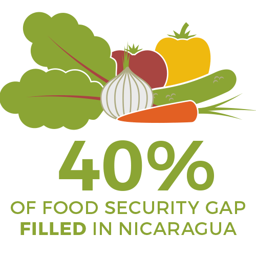
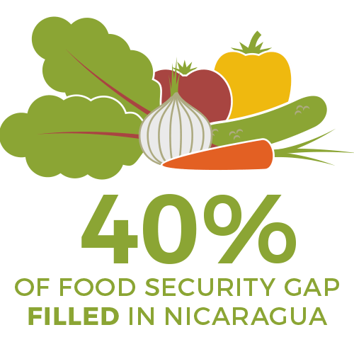

- ABOUT

Mission
We partner with coffee-farming communities in Latin America to cultivate a food-secure future. Our co-op partners and the thousands of coffee-farming families they represent are working to put good, healthy food on their tables every day.
Our Ipmact
We help coffee-growing communities strengthen local food systems, promote sustainable farming practices, diversify family livelihoods, and cultivate local leadership.
 


Help coffee-farming families and their communities access locally grown nutritious food, every day.
Blog

Voices of Change: Women’s Evolving Roles in Coffee-Farming Communities

Groundbreakers: Unveiling the Historic Impact of Women in Coffee Farming
More Than Links in the Supply Chain: Why Laura Peterson Supports Food 4 Farmers
The future of coffee needs women – and you!
“It’s a great advantage to grow vegetables without pesticides so we don’t jeopardize the health of our children.”
~ Rosibel Gonzalez, coffee farmer
Rosibel is a participant in our organic farmers market program with Nicaraguan coffee cooperative SOPPEXCCA.
70 S Winooski Ave
Ste 1W #312
Burlington, VT 05401 USA
Phone (802) 497-3304
Tax ID: 27-2267267